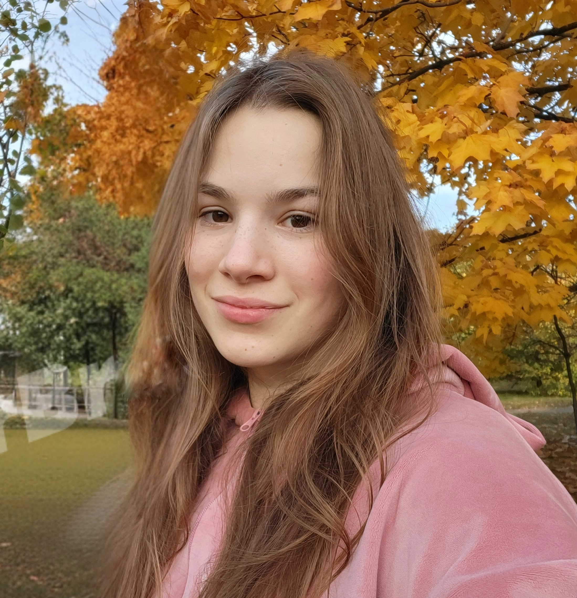

E-mail: veronika13072004@gmail.com
Belarus/Minsk
+375445806177 in Telegram and Viber

Hello! My name is Veronika, and I am applying for the Frontend Developer position. My goal is to gain practical experience and further develop my professional skills in this field, as well as deepen my knowledge in the realm of electronic business. I am committed to working diligently, actively contributing, and continuously learning in order to make a significant impact on the team’s success.
I am currently pursuing a Bachelor’s degree at the Belarusian State University of Informatics and Radioelectronics, Faculty of Engineering Economics. I am specializing in Electronic Business Economics (Economist-Programmer) and am in my 4 year of study (2022–2026). In my third year, my average score was 9.0
I have no experience, but I am ready to learn and develop in this direction.
Proficient in the MS Office suite.
Knowledge of HTML, CSS, JS. Skills in programming environments. At university, I worked in the areas of front-end development and statistical data analysis.
Knowledge of graphic design and proficient in Adobe Illustrator, Figma, and Canva, with basic proficiency in Adobe Photoshop.
English – Pre-Intermediate, but continuously improving.
Category B driver's license.
Efficient at time management, hardworking, emotionally balanced, active, with strong analytical thinking.
Completed short courses in the fundamentals of web design and creative development.
Created a brand book and advertising creatives for Instagram, as well as presentations.